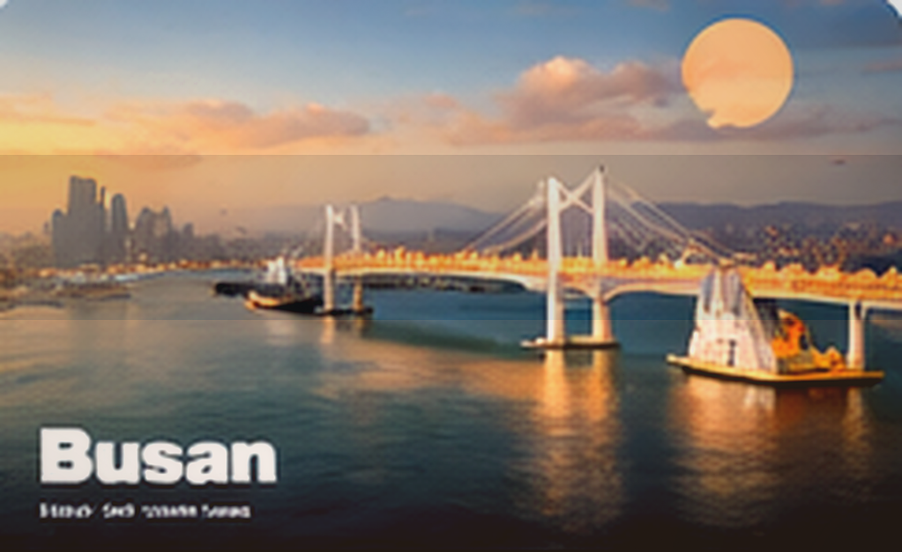

Korea City Guide
Jeju
Open skies, coastal roads, and slower resets—Jeju is more about rhythm than attraction count.
Coastal roadsWindy cafésOpen landscapesReset mood

Why it worksJeju feels best when you protect blank time, not just scenic stops.
Where to focus
Pick districts that match your energy instead of trying to touch everything.
Aewol
Good for cafés, coast drives, and west-side day pacing.
Seogwipo
Useful for waterfalls, food, and easier access to southern scenery.
Seongsan & East Jeju
Best when sunrise, fields, and a more open island feeling matter.
Food and local rhythm
What shapes the feel of the city more than a list of famous places.
- Black pork and seafood are the obvious anchors
- Bakery cafés and sea-view coffee stops shape the mood strongly
- Rental car pacing often matters more than restaurant count
Budget feel
Transport choice changes everything—rental flexibility often matters more than luxury upgrades.
Sample rhythm for Jeju
A realistic way to think about pacing before you generate a custom plan.
Sample itinerary
Jeju Slow Coastal Escape
Day 1 · Easy coast entryPick one side of the island and settle into the local rhythm.
Day 2 · Scenic loopOne strong nature anchor, café reset, and sunset coast timing.
Day 3 · Flexible island dayLet weather and energy decide whether you go east, west, or slower.
Day 4 · Gentle departureShort final stop, airport route, and no last-minute overreach.
Local tips
The small adjustments that make the city feel easier and more intentional.
- Without a car, Jeju needs stricter zone planning; with a car, avoid forcing too many far-apart stops.
- Weather can completely change the mood, so leave room for adaptation.
- The island is strongest when one day is intentionally underplanned.
Keep in mind
Tiny prep choices that improve the trip immediately.
- Choose west or east focus before building the route.
- Do not try to circle the whole island on a short trip.
- Windproof outerwear helps even outside winter.